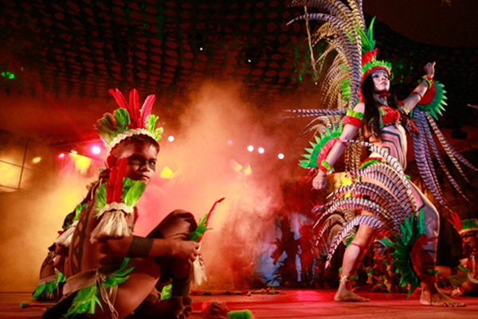

Festa do Guaraná
O evento ocorre em Maués, município do Amazonas, e conta com diversas atrações, como shows, comidas e etc. Tudo isso durante os dias 7, 8 e 9 de dezembro.
Dias desde o último evento:
Benefícios Para Saúde
Ele contém uma gama impressionante de estimulantes, como cafeína, teofilina e teobromina. O guaraná também possui antioxidantes, como taninos, saponinas e catequinas. Confira os benefícios que esse conjunto de substâncias proporciona para a sua saúde.
Tabela nutricional
| Porção de 3,0g (1 colher de chá) | ||
|---|---|---|
| Quantidade por porção | %VD(*) | |
| Valor Energético | 10 kcal | 1 |
| Carboidratos | 2,4 g | 1 |
| Cafeína | 90 mg | ** |
| Não contém quantidades significativas de gorduras totais, gorduras saturadas, gorduras trans, fibra alimentar e sódio. | ||
| (*)% Valores Diários de referência com base em uma dieta de 2.000 kcal ou 8.400 kJ. Seus Valores Diários podem ser maiores ou menores, dependendo de suas necessidades energéticas. | ||
| (**) % Valor diário não estabelecido | ||
Contra doenças oculares relacionadas à idade
Fatores como luz solar, dieta inadequada e certas opções de estilo de vida como fumar podem desgastar seus olhos com o tempo e aumentar o risco de doenças relacionadas aos olhos. Mas o guaraná contém compostos que combatem o estresse oxidativo, um importante fator de risco para problemas de visão relacionados à idade, como degeneração macular, catarata e glaucoma.
Auxilia na perda de peso
A cafeína presente no guaraná é capaz de acelerar o metabolismo em até 11% num período de 12 horas. Um metabolismo mais rápido significa que seu corpo queima mais calorias em repouso. Além disso, estudos em tubos de ensaio descobriram que o guaraná pode suprimir genes responsáveis pela produção de células de gordura, além de promover genes que a retardam.
Melhora a saúde do coração
O consumo de guaraná pode reduzir o risco de doenças cardíacas de duas maneiras. Em primeiro lugar, os antioxidantes do guaraná parecem ajudar o fluxo sanguíneo e podem prevenir a formação de coágulos sanguíneos, de acordo com pesquisas. Além disso, estudos mostraram que o guaraná pode diminuir a oxidação do colesterol LDL “ruim”. O colesterol LDL oxidado pode contribuir para o acúmulo de placas nas artérias.
Melhora a concentração
O guaraná é mais conhecido como ingrediente em bebidas energéticas populares. É uma excelente fonte de cafeína, que ajuda você a manter o foco e a energia mental. A cafeína age bloqueando os efeitos da adenosina, um composto que ajuda a relaxar o cérebro. Um estudo descobriu que as pessoas que tomaram um suplemento vitamínico contendo guaraná se sentiram menos cansadas ao completar vários testes, em comparação com aquelas que tomaram um placebo.
Guaraná Como Bebida Típica Japonesa
Refrigerantes à base de guaraná são raros em praticamente todo o Japão, mas não em Hokkaido, a província mais setentrional e fria do arquipélago, que se tornou referência desse tipo de bebida no país. A geografia e o empenho de um grupo de pequenas e médias empresas 60 anos atrás ajudam a entender como ele foi parar no copo dos japoneses. Muitas das marcas são produções locais, e quase todas trazem o mapa da província no rótulo como uma prova de que o guaraná tornou-se um orgulho de Hokkaido ao longo de 60 anos.
O primeiro refrigerante do gênero produzido em larga escala no Japão surgiu em 1960, quatro anos antes dos Jogos Olímpicos de Tóquio e na época em que o país começava a emergir das cinzas da guerra. Para rebater críticas que recebia por manter a economia superavitária e por impor altas tarifas sobre produtos importados, o país permitiu a entrada da Coca-Cola, que aportou no Japão em 1957. Em um curto espaço de tempo, os japoneses se apaixonaram pelo aroma único do refrigerante americano, levando à queda nas vendas de ramune (limonada gaseificada) e de cidra (soda), os refrigerantes produzidos na época pela indústria japonesa. Para conter a investida do refrigerante americano, a Federação Nacional de Cooperativas de Produtores de Soft Drink do Japão foi em busca de uma alternativa capaz de disputar o mercado local com a Coca-Cola. "Foi quando soubemos que no Brasil havia uma bebida consumida há muito tempo pela população e que batia de frente com a Coca-Cola", lembra Koichi Obara, atual presidente da Co-Up Co. A empresa foi formada por 35 cooperados de várias províncias para desenvolver e comercializar uma marca unificada do primeiro refrigerante marrom made in Japan.
Jogo: A Lenda do Guaraná
Além disso, a Lenda do Guaraná inspirou um jogo de navegador de mesmo nome. Desenvolvido pelo AfroGames, o jogo reconta a lenda, no qual o jogador possui o controle de um dos irmãos. Caso tenha curiosidade, pode jogá-lo no site do próprio desenvolvedor, assim como no video abaixo:
Jogo da Memória do Guaraná
Além disso,